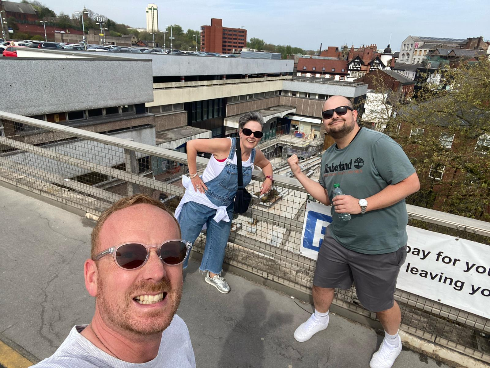
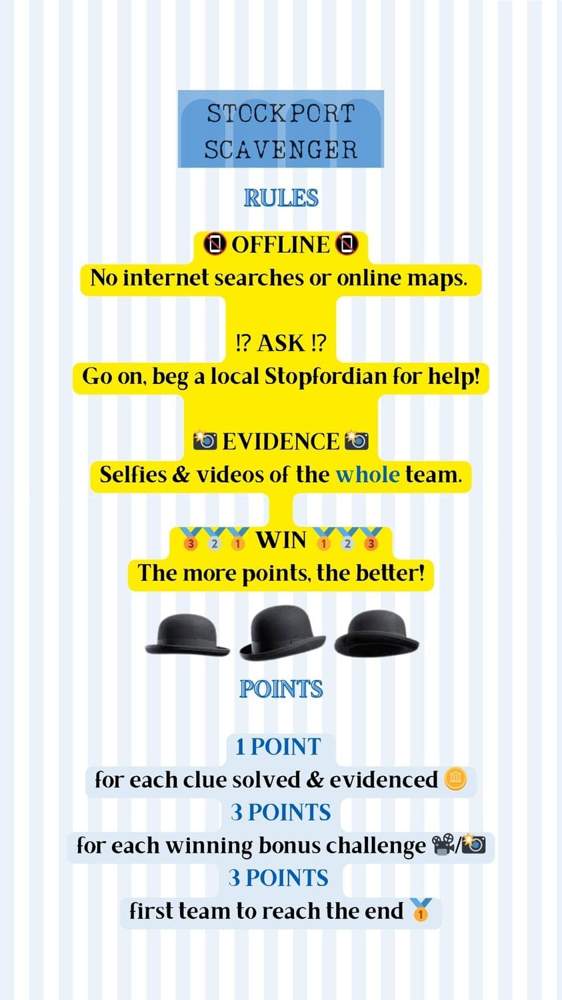

Interested?
What is a Scavenger Hunt?
A photo scavenger hunt is a fun, interactive game where players complete challenges by snapping selfies or photos—no item collecting required. Great for exploring cities, team-building, or parties. This site offers ready-made, tried-and-tested city hunts or inspiration to build your own. All you need is your phone, a sense of adventure, and the clue list. Simple, social, and totally customisable!
Scavenger Hunts
Pre-made City Adventures

North London
A devlilish dive through north east London.
Starting Point:
Dalston Station
Highlights:
Street Art & Theatre
Manchester
A frantic free-for-all through central Manchester.
Starting Point:
St Peter's Square
Highlights:
Interactive
Stockport
A tricky romp through central Stockport.
Starting Point:
Stockport Station
Highlights:
Interactive